1.
age: Weapons have become more and more powerful through the ages.
2.
archaeologist: The archaeologist has just found a dinosaur skeleton in the valley.
3.
century: My grandfather turned 100 years old today. He has lived for a whole century.

4.
decade: Peter has been waiting for his wife to come back for a decade.

5.
era: The death of King Quin Shi Huang marked the end of a famous era of China.

6.
evidence: The archaeologist shows evidence of a mummy to his colleagues.
7.
excavation: There is an interesting dinosaur fossil excavation going on in Nevada.

8.
generation: Grandfather, father, son and grandson represent four generations in a family.
9.
the Middle Ages: In Middle Ages, beautiful women usually became the topics of poets and painters.

10.
millennium: This clay tablet was created 1,000 years ago. It is a millennium older than your iPad.
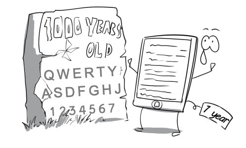
11.
duration: World War II began in 1939 and ended in 1945. It means that its duration is about six years.

12.
eternal: God is commonly portrayed as being eternal.

13.
pioneer: His great grandfather is one of the American pioneers who settled the Old West.

14.
timeline: The timeline of ancient Egypt is engraved on this stele.
15.
ancient: Most of ancient animals living in the prehistoric era are very huge.

16.
chronological: These files are arranged in chronological order.
17.
consecutive: Picasso painted this masterpiece in five consecutive months.

18.
historical: This tank was used in the historical battle between Germany and France.

19.
imminent: Everybody please pay attention. The rocket launch is imminent.
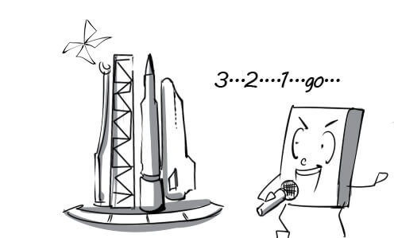
20.
middle-aged: The middle-aged man still stays in shape because he does exercises everyday.
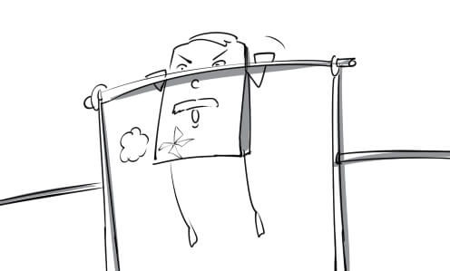
21.
nostalgic: Peter got nostalgic when he discovered that the place where he used to live had changed dramatically.
22.
prehistoric: Prehistoric men used to rub two sticks together to make fire.

23.
prior (to): Prior to 2011, there were a small number of Javan rhinoceros in Vietnam but now there are none left.
_adj.jpeg)
24.
punctual: Her boyfriend is always punctual for their dates.
25.
time-consuming: Building a pyramid is an extremely time-consuming process.

26.
erode: The walls have been eroded by natural agents after 1500 years.
27.
infer: From these facts Aristotle could infer that the Earth was round.

28.
predate: Stone tools predate bronze tools by thousands of years.

29.
span: Mr Green's teaching career has spanned 40 years and he doesn't intend to retire now.
30.
previously: Ho Chi Minh city, previously known as Saigon, is the largest city in Vietnam.

31.
subsequently: 65 million years ago, the Earth was hit by asteroids and subsequently dinosaurs became extinct.
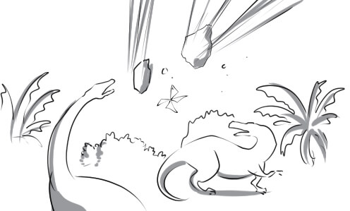
32.
agriculture: Approximately 80% of Vietnam's population work in agriculture sector.
33.
burrow: Moles live in underground burrows and eat roots, grubs and earthworms.

34.
climate: In December, the climate of Europe is really cold while that of Australia is quite hot.

35.
crop(s): Rice is the most important crop in Vietnam.
36.
decline: There has been a gradual decline in the forest area of Vietnam.

37.
den: He used to sleep in a bear's den when he was lost in the woods.
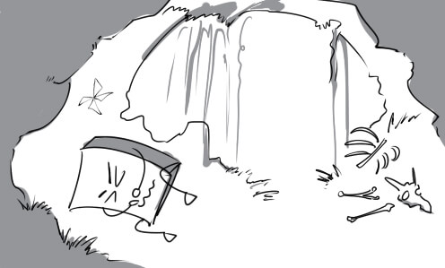
38.
disaster: The disaster destroyed the whole city and killed thousands of people.

39.
ecological balance: Over-exploiting forest resources will harm the ecological balance of our country.

40.
ecology: The ecology professor is lecturing on the importance of the ecological balance.
41.
evolution: The human figure has changed dramatically throughout human evolution.

42.
extinction: It is said that a crash of a large meteorite with the Earth was the primary cause of dinosaur extinction.

43.
fauna: This jungle has a very rich and diverse fauna.

44.
flora: Thanks to the conservation program, the flora of Nam Cat Tien Nation Park still remains rich.
45.
genetics: The genetics experts are conducting a delicate experiment.
46.
habitat: Animals live more comfortably in their natural habitat.

47.
human nature: It is really difficult to have a thorough knowledge of human nature.

48.
insect: We were bothered by many insects when going camping in the woods
49.
Mother Nature: Mother Nature offers mankind a great number of abundant natural resources.

50.
pesticide: Using too much pesticide will poison our crops instead of protecting them
51.
predator: Tiger is one of the most powerful predators in the animal kingdom.

52.
prey: The big bear is attacking its prey cruelly.
53.
repercussion: Building too many factories will cause repercussions for the environment.
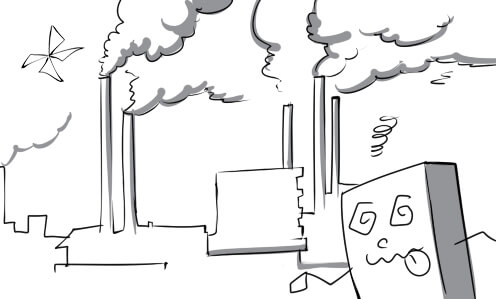
54.
scent: Insects are actually attracted by the scent of flowers.

55.
vegetation: The vegetation is lush on the Gálapagos Islands
56.
vermin: Grasshopper is a type of vermin that can cause considerable damage to crops.

57.
weed: The garden is full of weeds. We need to clean it up now.
58.
arid: People living in arid regions are suffering from water scarcity.
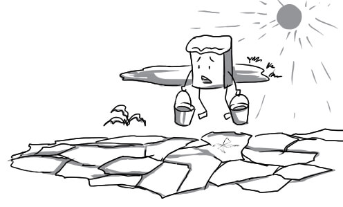
59.
domesticated: Don't worry! Lions in the circus have been domesticated, they won't eat you.

60.
endangered: The giant panda is an endangered species. There are just about 2,000 individuals living in the wild.

61.
genetically-modified: Genetically-modified tomatos are bigger and sweeter than normal ones.

62.
introduce: Carrot was introduced to this island by foreign guests.

63.
native: Tourists really enjoy delicious native fruits and vegetables.
64.
natural: Mary is tempted to buy a beautiful necklace made from natural pearls.
65.
resistant: You can use this water-resistant camera to take pictures under the sea.

66.
semi-arid: The rainfall is really low in the semi-arid regions in Australia.
67.
tropical: Vietnam is very famous for its delicious tropical fruits.
68.
vulnerable: New born deers are often vulnerable to attack.

69.
adapt: Tom is very healthy, which is why he can adapt to all kinds of weather.

70.
combat: The government has invested a great deal of effort in combating illegal dumping.
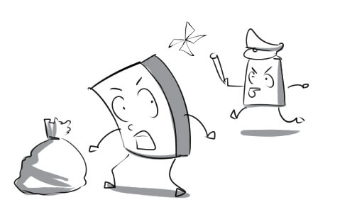
71.
cultivate: Mr Robert cultivates some vegetables such as cabbage, carrot... in the garden.

72.
eradicate: We need to eradicate illegal hunting to protect wild animals.
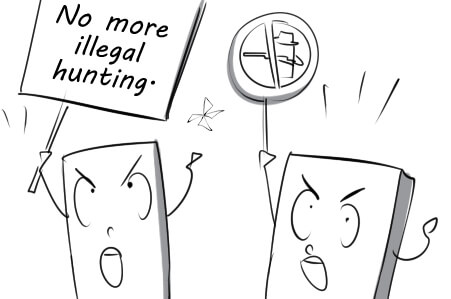
73.
hibernate: Bears always hibernate in their caves during winter.
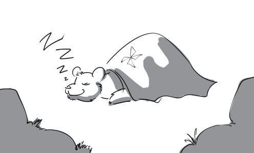
74.
tolerate: Penguins don't live in tropical regions because they can barely tolerate the heat.
75.
useless: It is useless to irrigate the dead tree, it will never come alive again.
76.
viable: Bazan soil is perfect for all coffee plants to be viable.
77.
vital: Human being cannot grow strong and healthy without vital factors such as water, food, vitamins…

78.
worthwhile: Water, light, fertilizer and beneficial insects are worthwhile to tree growth.

79.
confront: If you are a real man, you have to confront your own problems.

80.
dump: Dumping rubbish on the streets will degrade our environment.
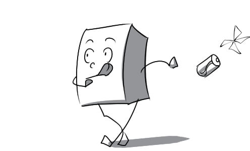
81.
inexorably: Human life and the environment are inexorably linked to one another.

82.
inevitably: Inevitably, this small tree will grow into a giant one in 10 years.
83.
salary: Andrew receives his salary on the 22nd of the month.

84.
share: Peter uses his savings to buy 50 shares of ABC corporation.

85.
skill: An ambulance driver must have the skill to drive at high speeds.

86.
staff: The staff is divided into many departments. Each department undertakes specific tasks.

87.
supervisor: My supervisor always keeps an eye on me. I cannot do anything behind his back.
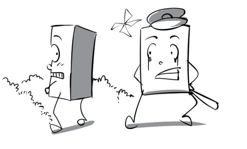
88.
takeover: Google completed their takeover of Motorola Mobility in early 2012.

89.
target: The manager sets high sales target for the new product and asks me to achieve it.
90.
trade: We have done a lot of trade with that company.

91.
trend: Manufacturing products in developing countries to exploit their cheap labor has become a business trend.
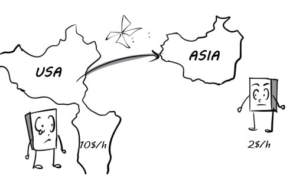
92.
unemployment: Unemployment affects many people in the world. Most of them have to live in absolute poverty.

93.
wage: Peter asks for his wage repeatedly because it's been two weeks since that last time he got paid.
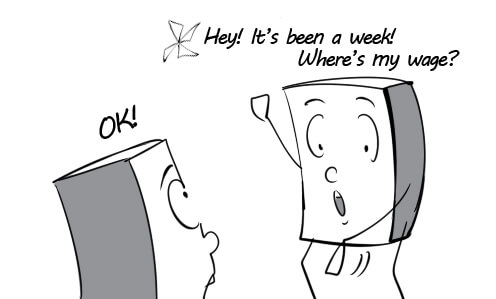
94.
workforce: The ages of people in Vietnam's workforce is between 18 and 60 years old.
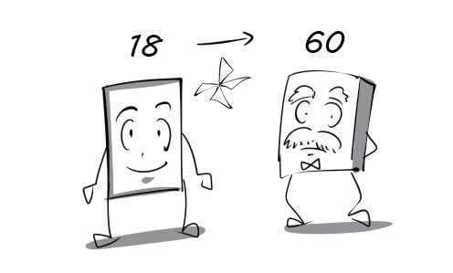
95.
workplace: Peter's workplace is comfortable and well equipped with modern technologies.